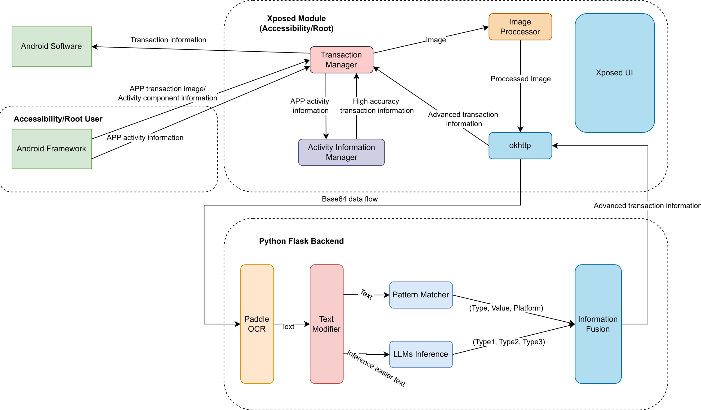

Fast Transaction Recorder
待补充
- 用例图
- 用例建模（面向对象方法学引论-下）
软件生命周期
为了利用软件工程的思想，来制作一款软件，先来看看软件工程中定义的软件生命周期：
- 软件定义（问题定义、可行性研究、需求分析）
- 软件开发（总体设计、详细设计、编码和单元测试、综合测试）
- 运行维护（维护）
问题定义（提出问题） & 可行性研究（解答问题）
前置问题
| 问题 | 解答 |
|---|---|
FTR 要解决什么问题？ |
自动化、智能、快速、稳定地帮助用户记录交易流水 |
FTR 的目标用户群体是？ |
使用 Android 系统、经常使用移动支付的用户 |
为了解决上述问题，FTR 应该至少具备什么功能？ |
a. 能够稳定的在后台运行，监控 Android 系统中相关交易软件的运行状态； b. 能够识别交易行为，在交易完成前，做好记录准备，交易进行时，尽最大化努力获取交易信息，交易完成后，尽最大化努力识别交易数据与类型，并记录 |
FTR 的定位是？ |
一个插件，连接交易信息与记账软件 |
技术难题
| 问题 | 解答 |
|---|---|
既然 FTR 会监控交易软件的运行状态，凭什么认为它不会窃取用户的个人信息？ |
FTR 必须开源，保证其通过源代码方式构建是容易的。 |
FTR 应该如何稳定地运行？ |
后台保活问题现在已经有比较成熟的解决方案，但均需要引导用户操作（这受 Android 系统限制），包括运行自启动、锁定后台、通知锁定 |
FTR 应该如何获取交易信息？ |
截图、无障碍获取 Activity 信息、提权获得强制获得任何 Activity 信息以及内存数据 |
FTR 应该如何分析数据？ |
市面上数据分析的软件很多，FTR 的目标是连接交易信息与记账软件，FTR 的重点是分析交易数据，从而判断出其究竟是什么样的交易，告诉记账软件，让其记录到账本中 |
需求分析（准确回答系统必须做什么）
这里请务必参考需求分析，明确目的、输出和要画的几张图（E-R 图、数据流图、状态图）。
软件需求规格说明书 (SRS)
1. 引言
1.1 目的
本软件（以下简称 FTR）旨在为 Android 用户提供一种自动化、智能化、快速且稳定的交易流水记录工具。通过监控交易软件的运行状态，识别交易行为，分析交易数据，并将其分类记录到记账软件中，帮助用户高效管理个人财务。
1.2 背景
随着移动支付的普及，用户的交易频率显著增加，但手动记录交易流水的方式效率低下且容易遗漏。FTR 通过后台运行和智能分析，自动完成交易流水的记录工作，解决用户的痛点。
1.3 定义
- 交易行为：用户在移动支付软件中完成的支付、转账、收款等操作。
- 交易流水：交易行为的详细信息，包括金额、交易类型、交易平台等。
- 记账软件：用于记录用户财务信息的第三方应用。
1.4 参考资料
- 用户需求问题表
- 技术难题解答
- 提供的代码实现与数据流图
2. 总体描述
2.1 产品功能
FTR 的核心功能包括：
1. 后台监控：稳定运行于 Android 系统后台，监控交易软件的运行状态。
2. 交易识别：通过截图、无障碍服务或提权方式，获取交易行为的相关信息。
3. 数据分析：利用 OCR 技术和模式匹配算法，分析交易数据，判断交易类型、金额和平台。
4. 数据输出：将分析结果以标准化格式输出，供记账软件使用。
2.2 用户特点
目标用户为经常使用移动支付的 Android 用户，尤其是需要高效管理个人财务的用户群体。
2.3 约束条件
- 隐私保护：
FTR必须开源，确保用户数据安全，杜绝隐私泄露。 - 系统限制：由于 Android 系统的后台运行限制，需引导用户完成自启动、后台锁定等操作。
- 兼容性：支持主流支付平台（如微信支付、支付宝、银联支付等）。
2.4 假设与依赖
- 用户愿意授予必要的权限（如无障碍服务、截图权限等）。
- 用户愿意按照指引完成后台保活设置。
3. 功能需求
3.1 核心功能
3.1.1 后台监控
- 描述：监控 Android 系统中交易软件的运行状态，捕获交易行为。
- 输入：交易软件的运行状态、Activity 信息。
- 输出：交易行为触发信号。
3.1.2 交易识别
- 描述：通过截图或无障碍服务，获取交易行为的详细信息。
- 输入：交易软件的截图或 Activity 数据。
- 输出：交易行为的原始数据（如金额、交易时间、交易平台等）。
3.1.3 数据分析
- 描述：利用 OCR 技术和模式匹配算法，分析交易数据，判断交易类型、金额和平台。
- 输入：交易行为的原始数据。
- 输出：标准化的交易信息（如
(income, food, 5.00)）。
3.1.4 数据输出
- 描述：将分析结果以标准化格式输出，供记账软件使用。
- 输入：标准化的交易信息。
- 输出：JSON 格式的交易数据。
4. 非功能需求
4.1 性能需求
- 响应时间：交易行为识别与分析的总时间不超过 2 秒。
- 资源占用：后台运行时，内存占用不超过 50MB。
4.2 安全需求
- 隐私保护：所有用户数据仅在本地处理，不上传至云端。
- 开源透明：代码开源，用户可自行编译和验证。
4.3 可用性需求
- 兼容性：支持 Android 8.0 及以上版本。
- 稳定性：在后台运行时，崩溃率低于 1%。
5. 技术实现
5.1 数据获取
- 截图方式：通过无障碍服务截取交易软件的屏幕内容。
- Activity 信息：利用无障碍服务或提权方式获取交易软件的 Activity 数据。
5.2 数据分析
- OCR 技术：使用 PaddleOCR 识别截图中的文字信息。
- 模式匹配：通过正则表达式匹配交易数据的关键字段（如金额、交易类型等）。
- LLM 推理：利用大语言模型（如 OpenAI API）对复杂交易数据进行推理分析。
5.3 数据输出
- 标准化格式：将分析结果以 JSON 格式输出，供记账软件调用。
6. 系统架构
6.1 模块划分
- Android 前端模块：
- 交易监控：监控交易软件的运行状态。
- 数据获取：通过截图或 Activity 信息获取交易数据。
- Python 后端模块：
- 数据分析：利用 OCR 和模式匹配算法分析交易数据。
- 数据输出：将分析结果以标准化格式输出。
E-R 图
erDiagram
ANDROID_SOFTWARE {
string transaction_information
}
ANDROID_FRAMEWORK {
string app_activity_information
}
TRANSACTION_MANAGER {
string app_transaction_image
string activity_component_information
string high_accuracy_transaction_information
}
ACTIVITY_INFORMATION_MANAGER {
string app_activity_information
}
IMAGE_PROCESSOR {
string processed_image
}
OKHTTP {
string advanced_transaction_information
}
PADDLE_OCR {
string text
}
TEXT_MODIFIER {
string inference_easier_text
}
PATTERN_MATCHER {
string type
string value
string platform
}
LLMS_INFERENCE {
string type1
string type2
string type3
}
INFORMATION_FUSION {
string type
string value
string platform
}
ANDROID_SOFTWARE ||--o{ TRANSACTION_MANAGER : "Provides"
ANDROID_FRAMEWORK ||--o{ TRANSACTION_MANAGER : "Provides"
TRANSACTION_MANAGER ||--o{ ACTIVITY_INFORMATION_MANAGER : "Uses"
TRANSACTION_MANAGER ||--o{ IMAGE_PROCESSOR : "Sends"
IMAGE_PROCESSOR ||--o{ OKHTTP : "Sends"
OKHTTP ||--o{ PADDLE_OCR : "Sends"
PADDLE_OCR ||--o{ TEXT_MODIFIER : "Sends"
TEXT_MODIFIER ||--o{ PATTERN_MATCHER : "Sends"
TEXT_MODIFIER ||--o{ LLMS_INFERENCE : "Sends"
PATTERN_MATCHER ||--o{ INFORMATION_FUSION : "Sends"
LLMS_INFERENCE ||--o{ INFORMATION_FUSION : "Sends"状态流程图
stateDiagram-v2
[*] --> Monitoring
Monitoring --> TransactionDetected : Detect transaction
TransactionDetected --> DataCapture : Capture transaction data
DataCapture --> DataProcessing : Process captured data
DataProcessing --> OCRAnalysis : Perform OCR analysis
OCRAnalysis --> TextModification : Modify text for inference
TextModification --> PatternMatching : Match patterns
TextModification --> LLMInference : Perform LLM inference
PatternMatching --> InformationFusion : Send matched data
LLMInference --> InformationFusion : Send inferred data
InformationFusion --> [*] : Output transaction information 6.2 数据流
- Android 前端捕获交易行为，生成截图或 Activity 数据。
- Python 后端接收数据，进行 OCR 识别和模式匹配分析。
- 分析结果以 JSON 格式输出，供记账软件使用。

7. 开发计划
7.1 里程碑
- 第一阶段：完成 Android 前端模块的开发，包括交易监控和数据获取功能。
- 第二阶段：完成 Python 后端模块的开发，包括数据分析和输出功能。
- 第三阶段：集成前后端模块，进行功能测试和性能优化。
- 第四阶段：开源代码，发布正式版本。
7.2 时间安排
- 第一阶段：2 周
- 第二阶段：3 周
- 第三阶段：2 周
- 第四阶段：1 周
8. 附录
8.1 术语表
- OCR：光学字符识别（Optical Character Recognition）。
- LLM：大语言模型（Large Language Model）。
- JSON：一种轻量级的数据交换格式。
8.2 参考资料
- 提供的代码实现与数据流图
- 用户需求问题表
- 技术难题解答
系统设计与实现（包括传统中的概要设计和详细设计）
程序结构设计
- ocr_image 方法流程图
flowchart TD
A1[Start] --> A2[Call PaddleOCR for OCR recognition]
A2 --> A3[Store recognition result in ocr_res list]
A3 --> A4[Return recognition result]
A4 --> A5[End] - draw 方法流程图
flowchart TD
B1[Start] --> B2[Open image and convert to RGB format]
B2 --> B3[Extract boxes, texts, and scores from result]
B3 --> B4[Call draw_ocr to draw recognition result]
B4 --> B5[Save the drawn image to output folder]
B5 --> B6[End] - ocr_pattern 方法流程图
flowchart TD
C1[Start] --> C2[Define platform matching patterns]
C2 --> C3[Initialize platform, value, type as None]
C3 --> C4[Iterate over OCR results to match value pattern]
C4 --> C5{Does value pattern match?}
C5 -- Yes --> C6[Extract value and determine income/outcome]
C5 -- No --> C7[Continue matching other patterns]
C6 --> C8[Match platform patterns]
C8 --> C9{Do all patterns match?}
C9 -- Yes --> C10[Determine platform type]
C9 -- No --> C11[Return None]
C10 --> C12[Return platform, value, type]
C11 --> C12
C12 --> C13[End] - ocr_all 方法流程图
flowchart TD
D1[Start] --> D2[Initialize empty array]
D2 --> D3[Iterate over images in img_dir folder]
D3 --> D4{Is the file a PNG image?}
D4 -- Yes --> D5[Call ocr_image to recognize image]
D5 --> D6[Call draw to draw recognition result]
D6 --> D7[Call ocr_pattern to analyze result]
D7 --> D8[Append analysis result to array]
D4 -- No --> D9[Skip the file]
D8 --> D10{Is iteration complete?}
D10 -- Yes --> D11[Return array]
D10 -- No --> D3
D11 --> D12[End]-
reason 方法流程图
flowchart TD E1[Start] --> E2[Initialize system prompt] E2 --> E3[Call OpenAI API to send chat request] E3 --> E4[Receive and return reasoning result] E4 --> E5[End] -
Flask 路由 /local-picture-test 流程图
flowchart TD F1[Start] --> F2[Create PaddleOCRDetector instance] F2 --> F3[Call ocr_all to process all images] F3 --> F4[Get OCR result of the first image] F4 --> F5[Extract and concatenate text content] F5 --> F6[Create AutoReasoner instance with concatenated text] F6 --> F7[Call reason method for reasoning] F7 --> F8[Return reasoning result in JSON format] F8 --> F9[End]
人机界面设计
测试
测试总览
| 测试类型 | 测试模块/功能 | 测试内容 | 预期结果 |
|---|---|---|---|
| 单元测试 | ocr_image 方法 |
测试 OCR 识别功能，输入一张图片路径，检查返回的 OCR 结果是否正确。 | 返回的 OCR 结果包含正确的文本内容和坐标信息。 |
| 单元测试 | draw 方法 |
测试绘制功能，输入图片路径和 OCR 结果，检查生成的图片是否正确绘制识别框和文本。 | 输出图片包含正确的识别框、文本和分数，保存到指定路径。 |
| 单元测试 | ocr_pattern 方法 |
测试模式匹配功能，输入 OCR 结果，检查是否正确识别平台、金额和交易类型。 | 返回的 platform、value 和 type 与输入数据匹配。 |
| 单元测试 | ocr_all 方法 |
测试批量处理功能，输入一个包含多张图片的文件夹，检查是否正确处理所有图片并返回分析结果。 | 返回的结果数组包含所有图片的分析结果，且每个结果正确。 |
| 单元测试 | reason 方法 |
测试推理功能，输入一段交易文本，检查返回的推理结果是否符合预期格式（如 (income, food, 5.00)）。 |
返回的推理结果为正确的三元组格式，且内容符合输入文本的语义。 |
| 单元测试 | Flask 路由 /local-picture-test |
测试 Flask 路由是否正确调用 OCR 和推理模块，返回 JSON 格式的推理结果。 | 返回的 JSON 数据包含正确的推理结果，HTTP 状态码为 200。 |
| 集成测试 | PaddleOCR 与 ocr_pattern 的集成 |
测试 OCR 识别结果是否能正确传递到模式匹配模块，并返回正确的分析结果。 | 模式匹配模块能够正确处理 OCR 结果，返回的 platform、value 和 type 正确。 |
| 集成测试 | ocr_all 与 Flask 路由的集成 |
测试 Flask 路由是否能正确调用 ocr_all 方法处理图片，并返回分析结果。 |
Flask 路由返回的 JSON 数据包含所有图片的分析结果，且每个结果正确。 |
| 集成测试 | ocr_image 与 draw 的集成 |
测试 OCR 识别结果是否能正确传递到绘制模块，并生成正确的绘制图片。 | 绘制的图片包含正确的识别框、文本和分数，保存到指定路径。 |
| 集成测试 | ocr_pattern 与 reason 的集成 |
测试模式匹配结果是否能正确传递到推理模块，并返回符合预期的推理结果。 | 推理模块返回的结果为正确的三元组格式，且内容符合模式匹配结果的语义。 |
| 性能测试 | ocr_all 方法 |
测试批量处理多张图片的性能，检查处理时间是否在合理范围内（如 2 秒以内）。 | 所有图片在合理时间内完成处理，且结果正确。 |
| 性能测试 | Flask 路由 /local-picture-test |
测试路由在高并发请求下的性能，检查是否能稳定返回结果。 | 在高并发情况下，路由能稳定返回正确的 JSON 数据，且响应时间在合理范围内。 |
| 安全测试 | 数据隐私保护 | 测试是否有用户数据（如图片、OCR 结果）被上传到外部服务器。 | 所有用户数据均在本地处理，无数据上传到外部服务器。 |
| 边界测试 | ocr_image 方法 |
输入一张空白图片或无文字的图片，检查是否能正确处理。 | 返回空结果或提示无文字内容。 |
| 边界测试 | ocr_pattern 方法 |
输入不符合任何模式的 OCR 结果，检查是否能正确处理。 | 返回 None 或提示无匹配结果。 |
| 异常测试 | Flask 路由 /local-picture-test |
测试路由在输入无效图片路径或文件夹时的处理，检查是否能正确返回错误信息。 | 返回 HTTP 状态码 400 或 500，并包含详细的错误信息。 |
| 异常测试 | reason 方法 |
输入格式错误的交易文本，检查推理模块是否能正确处理并返回错误提示。 | 返回错误提示或默认值，程序不崩溃。 |
说明
-
测试类型：
- 单元测试：针对单个方法或模块的功能进行测试。
- 集成测试：测试多个模块之间的交互是否正确。
- 性能测试：测试系统在高负载或大数据量下的性能。
- 安全测试：确保用户数据的隐私和安全。
- 边界测试：测试输入的边界情况。
- 异常测试：测试系统在异常输入或错误情况下的表现。
-
覆盖范围：
- 测试内容覆盖了代码中的主要功能模块和关键逻辑，确保系统的功能性、稳定性和安全性。
-
预期结果：
- 每个测试都有明确的预期结果，便于开发人员验证功能是否符合需求。